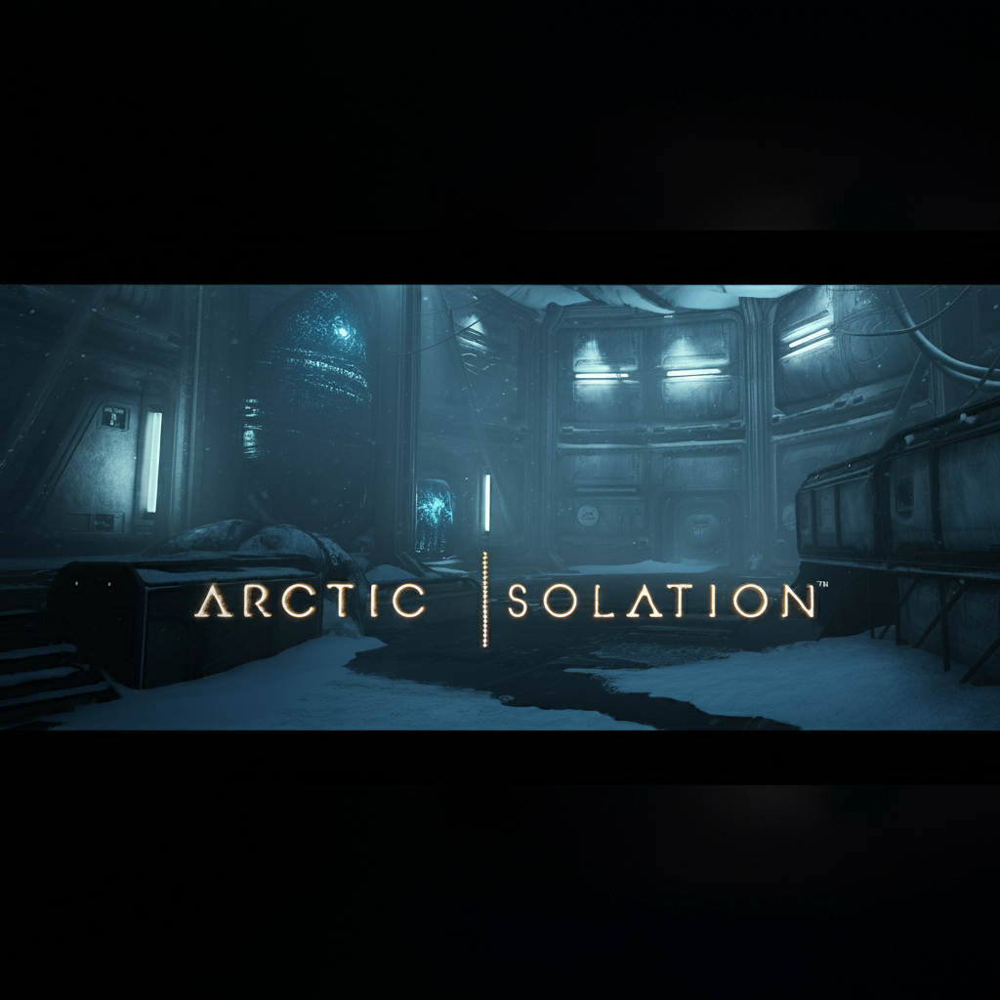
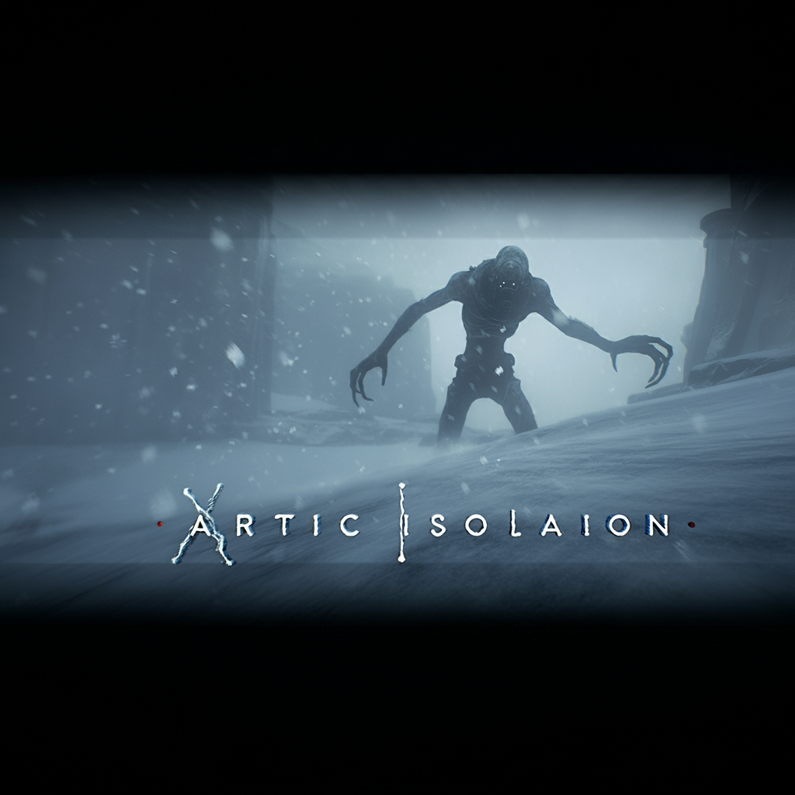
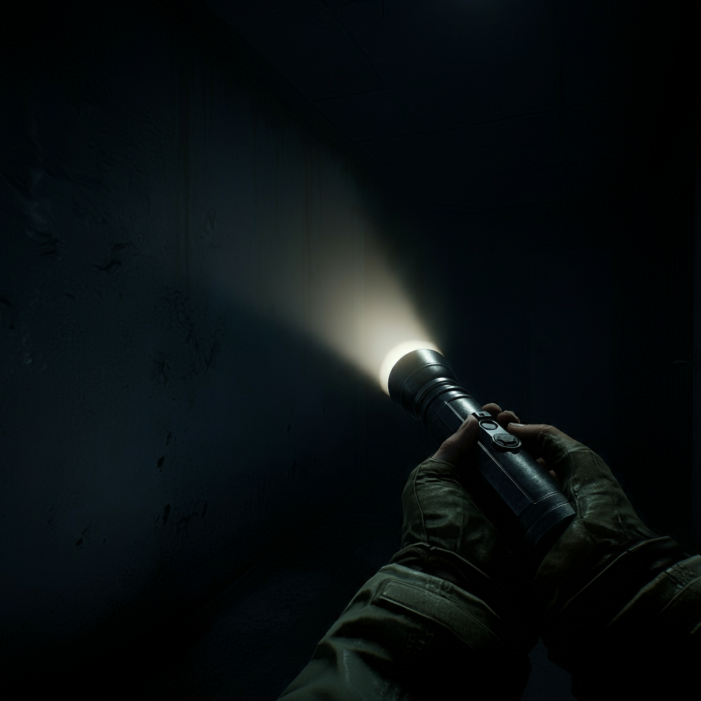
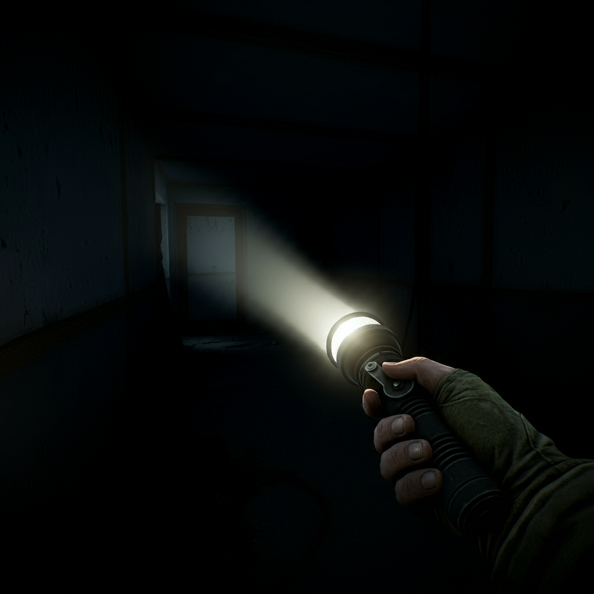

Arctic Isolation is a First Person Adventure/Survival Horror game that uses adaptive Ai to increase the games difficutly slowly but noticeably. I have iplimented Chat Gpt to correct any errors in the code as it runs so the creature/monster's ai doesnt break. The building is pitch black and has eary sounds to increase the atmosphere. Their are 3 diffrent ways to light up the area. A hand crank flashlight (Creates alot of noise and alerts the creature but has infinite power), A flashlight (Creates No active noise but requires batterys), Night Vision Camera(Creates noise starting up, but then its quiet, eminates no light, allows you to light up the entire room, Has seprate batterys)
Batterys Batterys are a key source in this game. Their are 2 diffrent kinds of battery, AA, and NVC.
AA batterys have 360 seconds of life and be found periodically throughout the game, But they are limited.
NVC batterys have 180 seconds of life and are hard to find, They are limited.
Microphone Use This game utilizes your microphone to alert the creature to your location. Their are 3 levels of volume. Quiet, Noisy, and Loud.
Quiet, The creature cannot hear you in this state, Wispers count as quiet noise. Items that trigger this noise (Flashlight)
Noisy, The creature can hear you in this state but only at a close distance, Talking and background noise will count towards this. Items that trigger this noise (NVC first 3 seconds)
Loud, The creature can hear you from anywhere on the map, Screaming will trigger this. Items that trigger this noise (hand crank flashlight)
Microphone buildup, Every small action you do increses the sensitivity of your microphone allowing quiet noice to turn into Noisy and Noisy to turn into Loud. This can be reset by standing still for 30 seconds or hiding for 15
The Creature The creature uses adaptive A.I to change its pathfinding, any hallway or vent you take will be recorded. There is a 1/10 chance it adapts to your path. At the end stages of the game The odds change to a 1/2 chance, Increasing the difficutly. The creature can also see the light eminating from your flashlight, allowing it to know your location. The creature eminates a red and a green light (very faintly) . You can also hear when its nearby, It sounds like mechanical clicking. The creature's speed increases as you progress throughout the game.
The Player At the start of story mode the character is injured by the events that took place before. You have to explore the starting area for a healing device, Once you have found that your character signifinly speeds up. This allows you to crouch and sprint.
Sprinting, Sprinitng increases your speed by 15% but that creates noise (Noisy)
Crouching, Crouching decreases your speed by 25% but creates no noise. It allows you to hide under desks and allows you to access new areas.
Injured, The creature has a 30% chance to injure you instead of killing you. While injured your movment speed decreases 15% and you create a trail of blood, the creature can see that. some areas on the map requires you to get injured but there is a healing station nearby.
Healing Station The Healing Station is a cylindrical device found throughout the map. It allows you to sit down and stab your arm with a unknown object. lucky for you this doesn't kill you it does quite the opposite. It heals you to full health. at cost of making noise. You are not safe in the Healing Station, You are able to be killed inside. (there is a unique animation if you do get killed) it creates noisy sound. So don't try to hide there. (This is the save points)
Gamemodes There are 3 gamemodes as of now
Story Story allows you to play the game as intended, following the set story.
Survival Survival allows you to play the game how you want. Giving you all the items at the start.
Hardcore Hardcore goes along with Survival but on a much more difficult scale.
Player speed is reduced by 10%
Microphone buildup is increased by 15%
Injured speed is reduced by 5%
The creature has a 1/5 chance to adapt and a 1/1 chance to adapt at the end
The range of the creatures hearing is increased by 10% and the speed is increased by 12%
There are less hiding spots and Healing Stations.
The creature has a 15% chance to injure you.



